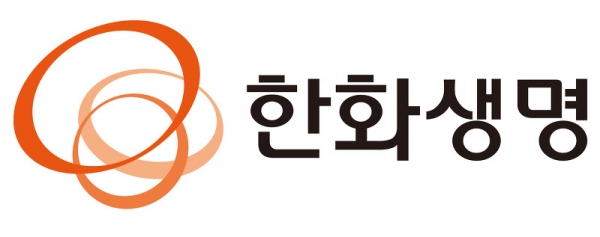

한화생명 Hanwha Life
한화생명(Hanwha Life)은 한화그룹 계열의 대한민국 생명보험회사다.
최종 업데이트

한화생명은 어떤 브랜드인가
한화생명보험은 1946년 9월 대한생명보험으로 출범한 대한민국 현존 최초의 생명보험사다. 첫 전환점은 1999년 신동아그룹 부도로 예금보험공사 관리 아래 공적자금이 투입된 국영화이며, 두 번째 전환점은 2002년 한화그룹의 경영권 인수다.
2012년 한화생명으로 사명을 바꿨고, 오늘날 총자산 약 122조원 규모로 삼성·교보와 함께 빅3를 형성한다.
한화생명은 어떻게 봐야 할까
가장 중요한 흐름은 두 가지다. 첫째, 국내 본업의 정체다.
2025년 5월 기준 점유율은 삼성생명 20.3%, 한화생명 16.0%, 교보생명 15.4%로, 2위 자리를 놓고 교보와 엎치락뒤치락하는 가운데 신한라이프가 가세하며 빅4 쏠림이 심화됐다. 2025년 보험손익은 약 3천4백억원으로 전년 약 5천억원 대비 30%가량 줄어, 본업 수익성 압박이 뚜렷하다.
둘째, 이를 상쇄하는 해외·비보험 확장이다. 2008년 진출한 베트남은 15년 만에 누적 흑자를 냈고, 인도네시아 법인은 흑자전환했으며, 2025년 6월 노부은행 지분 40% 인수를 마무리해 은행업까지 더했다.
저출산·고령화로 내수가 구조적 저성장에 진입한 한국 시장 맥락에서, 동남아 영업과 북미 자산운용을 양축으로 한 글로벌 종합금융그룹 전환이 성장 해법으로 추진되고 있다.
한화생명은 어떻게 시작되고 성장했나
창립 배경은 광복 직후다. 1946년 9월 일본생명 평양지부장 출신 임창호와 자산가 강익하가 대한생명보험을 세웠고, 이는 한국 생명보험 산업의 출발점이 됐다.
첫 전환점은 1969년 부도 위기로 신동아그룹이 경영권을 인수한 일이다. 신동아 계열 시절인 1985년 여의도 63빌딩을 완공해 사옥으로 삼았다.
두 번째 전환점은 1999년 신동아그룹 부도로 예금보험공사가 경영권을 가져가 국영 보험사가 된 것이며, 세 번째이자 결정적 전환은 2002년 한화그룹의 인수다. 이 거래는 한화 인수합병 역사상 가장 성공적인 사례로 평가받는다.
인수 10년이자 한화 창립 60주년이던 2012년 한화생명으로 개명했고, 63빌딩도 한화63시티로 재편됐다. 이후 베트남(2008), 인도네시아 등으로 영역을 넓혀 왔다.
한화생명의 브랜드 아이덴티티는 무엇인가
브랜드의 시각 기준은 2007년 도입된 한화 트라이서클이다. 대표색 오렌지를 세 가지 톤으로 결합한 세 개의 원으로, 각각 신뢰·존경·혁신을 상징하며 우주로 팽창·성장하는 무한 발전의 이미지를 담는다.
브랜드 에센스 'Energy for Life'는 역동적 에너지로 무한 성장을 표현하는 보이스의 토대다. 핵심 가치는 고객·사회·인류의 조화로운 발전이며, 타깃은 가계 보장 수요층 전반에 더해 MZ세대까지 넓힌다.
건강·종신 보장 중심의 안정감과 글로벌 금융기업이라는 진취성을 동시에 전달하려는 톤이 특징이다.
한화생명의 대표 제품과 서비스는 무엇인가
상품군은 보장성 중심으로 재편되고 있다. 암·뇌·심장 진단과 치료를 통합한 시그니처 H통합건강보험을 대표 라인으로 내세우고, 장기납 종신과 건강보험으로 신계약 마진을 키운다.
판매는 전속 설계사 조직을 분리한 제판분리 자회사 한화생명금융서비스를 축으로 하며, GA·디지털 채널을 병행한다.
한화생명은 지금 어떤 상태인가
본사는 서울 여의도 63빌딩에 있다. 지배구조상 한화그룹 계열사로, 한화생명은 한화손해보험 지분 51.36%, 한화자산운용 지분 100%를 보유한 최대주주이며, 한화자산운용은 한화투자증권 지분 46.08%를 가진다.
2025년 3분기 누적 연결 실적은 전년 동기 대비 매출 16.4%, 영업이익 6.4%, 당기순이익 6.8% 증가했고, 수입보험료는 약 19조 7천8백억원으로 늘었다. 별도기준 상반기 순이익은 약 1천8백억원이다.
2025년 6월 인도네시아 노부은행 지분 40% 인수를 완료해 단일 최대주주가 됐다. 그 밖의 세부 수치는 미공개.
한화생명 로고는 어떻게 변해왔나
자주 묻는 질문
한화생명는 어느 나라 브랜드인가요?
한화생명는 한국의 브랜드·비즈니스 브랜드입니다.
한화생명는 언제 설립되었나요?
한화생명는 1946년 설립되었습니다.
한화생명의 브랜드 아이덴티티는 무엇인가요?
브랜드의 시각 기준은 2007년 도입된 한화 트라이서클이다.
한화생명의 대표 제품은 무엇인가요?
상품군은 보장성 중심으로 재편되고 있다.
한화생명의 본사는 어디에 있나요?
본사는 서울 여의도 63빌딩에 있다.
한화생명의 공식 웹사이트는 어디인가요?
한화생명의 공식 웹사이트는 https://www.hanwhalife.com/ 입니다.
출처와 검증
한화생명 관련 참고: 공식 웹사이트 · 위키데이터 Q491990 · 한국어 위키백과 · 영어 위키백과. 브랜드명은 한글과 원어를 함께 표기하되 데이터에 없는 표기는 만들지 않습니다. 기원 국가·설립연도는 검수된 정의문에서 확인된 값을 우선하고, 없을 때만 공식 웹사이트 URL이 일치하는 위키데이터 개체의 값을 씁니다. 위키데이터 값은 2026-09-07 기준입니다.